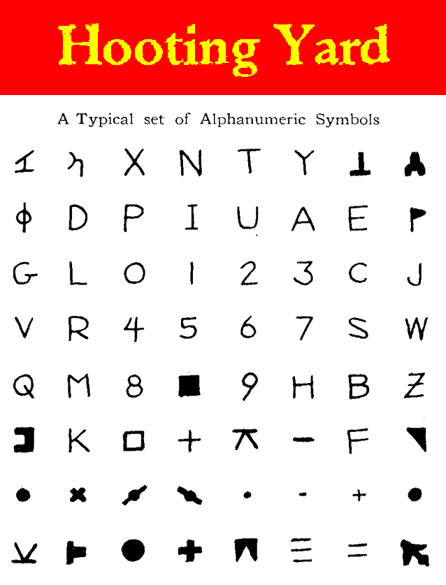

Thursday, May the 7th, 2009
back to: title, date or indexes
Long-term readers, and those who regularly frequent the 2003–2006 Archive, will be aware that in those distant days Hooting Yard had a certain ramshackle charm. Mr Key had to be dragged kicking and screaming to use a proper blog format, though clearly there are innumerable benefits in terms of indexing and commenting and so on. It was the lack of any helpful method of navigation that led to the old site having what was rightly called an “Unhelpful Index”.
Now, through the titanic efforts of Glyn Webster, the 2003–2006 Archive has been helpfully indexed. Readers can zip to any item at the click of a mouse. This also means Mr Key can refer you back to some age-old piece without having to use that increasingly annoying instruction to “go to the page and scroll down”.
Mr Webster's work is very much appreciated, and it seems all good Yardists ought to spend a few days, or weeks, or even months scrubbling around in the Archive to dig out their favourites, or to discover things they didn't even know were there.
NOTE : The link in the sidebar now directs straight to what Mr Webster calls Project Ṻbercoordinator. He has also provided this handy diagram:
